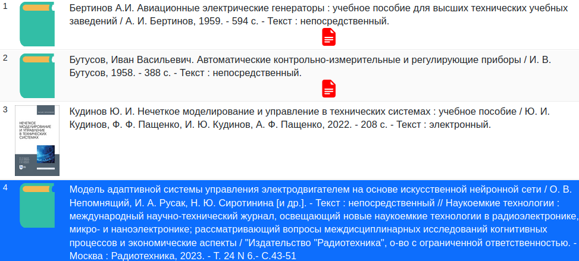

В сети имеется сайт Государственной публичная научно-техническая библиотека России:
Чтобы чистать книги в этой библиотеке, необходима регистрация через электронную почту. В ответ придет уникальный номер читательского билета. Он служит входом в онлайн-библиотеку (пароль не требуется).
В библиотеке есть три вида книг:
1. Те, которые можно прочитать в электронном виде прямо на сайте библиотеки. В поисковой выдаче они имеют крупный красный значек текстового документа. В описании будет строка "Текст: непосредственный". На скриншоте ниже это книги с номерами 1 и 2:

2. Те, которые можно прочитать в электронном виде на сайте научного издательства. Как минимум, таким издательством язвляется издательство Лань:
На странице книги будет ссылка на книгу на сайте издательства. Чтобы бесплатно прочитать книгу, надо зарегистрироваться на сайте издательства. Что касается издательства Лань, регистрация идет через email, заводится логин (сам email) и пароль.
В момент первого входа будет запросная форма, в которой надо указать учебное заведение, причем списка не будет, надо указывать название вручную, и только если учебное заведение входит в список обслуживаемых, можно будет продолжить. Чтобы долго не думать, можно написать НИЯУ МИФИ, и выбрать любой вуз. В качестве должности можно усказать "Сотрудник". Никто это не проверяет (с чего бы это ВУЗ вообще отвечал на запрос какого-то издательства о наличии определенного сотрудника).